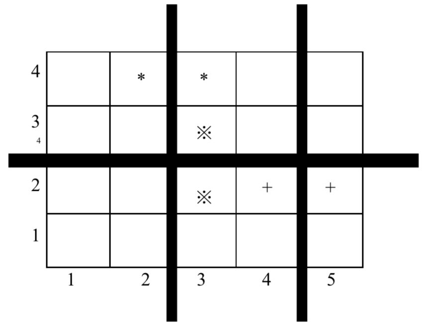

上课的时候总有一些同学和前后左右的人交头接耳，这是令小学班主任十分头疼的一件事情。不过，班主任小雪发现了一些有趣的现象，当同学们的座次确定下来之后，只有有限的 $D$ 对同学上课时会交头接耳。同学们在教室中坐成了 $M$ 行 $N$ 列，坐在第i行第j列的同学的位置是（$i,j$），为了方便同学们进出，在教室中设置了 $K$条横向的通道，$L$ 条纵向的通道。于是，聪明的小雪想到了一个办法，或许可以减少上课时学生交头接耳的问题：她打算重新摆放桌椅，改变同学们桌椅间通道的位置，因为如果一条通道隔开了两个会交头接耳的同学，那么他们就不会交头接耳了。
请你帮忙给小雪编写一个程序，给出最好的通道划分方案。在该方案下，上课时交头接耳的学生对数最少。
第一行，有 $5$ 个用空格隔开的整数，分别是 $M$，$N$，$K$，$L$，$D$（$2 \le N，M \le 1000，0 \le K<M，0 \le L<N，D \le 2000$）。
接下来 $D$ 行，每行有 $4$ 个用空格隔开的整数，第 $i$ 行的 $4$ 个整数 $X_i，Y_i，P_i，Q_i$，表示坐在位置（$X_i,Y_i$）与（$P_i,Q_i$）的两个同学会交头接耳（输入保证他们前后相邻或者左右相邻）。
输入数据保证最优方案的唯一性。
第一行包含 $K$ 个整数，$a_1a_2......a_K$，表示第 $a_1$ 行和 $a_1+1$ 行之间、第 $a_2$ 行和第 $a_2+1$ 行之间、...、第 $a_K$ 行和第 $a_K+1$ 行之间要开辟通道，其中 $a_i< a_{i+1}$，每两个整数之间用空格隔开（行尾没有空格）。
第二行包含 $L$ 个整数，$b_1b_2......b_k$，表示第 $b_1$ 列和 $b_1+1$ 列之间、第 $b_2$ 列和第 $b_2+1$ 列之间、...、第 $b_L$ 列和第 $b_L+1$ 列之间要开辟通道，其中 $b_i< b_{i+1}$，每两个整数之间用空格隔开（行尾没有空格）。
4 5 1 2 3 4 2 4 3 2 3 3 3 2 5 2 4
2 2 4
【样例解释】

上图中用符号 *、※、+ 标出了 $3$ 对会交头接耳的学生的位置，图中 $3$ 条粗线的位置表示通道，图示的通道划分方案是唯一的最佳方案。
 Comet OJ
Comet OJ